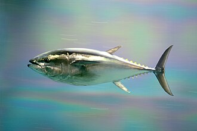

養殖くろまぐろの生産量 都道府県ランキング
全7都道府県の順位と収獲量
養殖くろまぐろの収獲量が全国で最も多いのは長崎県で、6,666 tです。全国（1万8,687 t）の36%を占めます。

| 順位 | 都道府県 | 収獲量 | 全国に占める割合 |
|---|---|---|---|
| 1位 | 長崎県 | 6,666 t | 36% |
| 2位 | 鹿児島県 | 3,148 t | 17% |
| 3位 | 高知県 | 2,301 t | 12% |
| 4位 | 愛媛県 | 1,534 t | 8.2% |
| 5位 | 三重県 | 1,326 t | 7.1% |
| 6位 | 和歌山県 | 1,274 t | 6.8% |
| 7位 | 大分県 | 614 t | 3.3% |
PR

養殖くろまぐろの生産量の推移（令和2年〜令和6年）
全国の収獲量は、令和2年の1万8,167 tから令和6年の1万8,687 tへ、ほとんど変わっていません。期間中、1位は一貫して長崎県です。
| 年 | 全国 | 1位 | 2位 | 3位 |
|---|---|---|---|---|
| 令和6年 | 1万8,687 t | 長崎県6,666 t | 鹿児島県3,148 t | 高知県2,301 t |
| 令和5年 | 1万6,200 t | 長崎県6,253 t | 高知県2,084 t | 鹿児島県1,848 t |
| 令和4年 | 2万526 t | 長崎県7,233 t | 鹿児島県3,483 t | 愛媛県2,058 t |
| 令和3年 | 2万1,476 t | 長崎県7,144 t | 鹿児島県3,584 t | 高知県2,308 t |
| 令和2年 | 1万8,167 t | 長崎県5,556 t | 鹿児島県3,492 t | 高知県1,918 t |
この数字について
- 分類：鮪の仲間
- 全国の収獲量：1万8,687 t
- この数字が表すもの：収獲量（養殖による収獲量）
- 調査：海面漁業生産統計調査（海面養殖業） 令和6年
- この品目は養殖の統計です。
- 7県分を調査（調査していない県は順位に入りません）
養殖くろまぐろの生産量について、よくある質問
- 養殖くろまぐろの生産量が日本一の都道府県はどこですか？
- 長崎県です。海面漁業生産統計調査（海面養殖業）（令和6年）で6,666 tでした。
- 養殖くろまぐろの生産量ランキング2位・3位はどこですか？
- 2位は鹿児島県（3,148 t）、3位は高知県（2,301 t）です。
- 養殖くろまぐろの生産量ランキング4位・5位はどこですか？
- 4位は愛媛県（1,534 t）、5位は三重県（1,326 t）です。養殖くろまぐろの全7県の順位は上の表のとおりです。
- 養殖くろまぐろの全国の生産量はどれくらいですか？
- 1万8,687 t（令和6年）です。